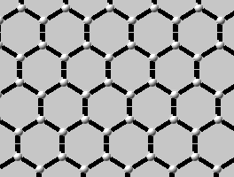
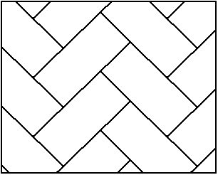

Instructions to get started quickly
Escher Web Sketch allows you to draw repeating patterns in the plane.
You can select the symmetry of the patterns by clicking on one of the
icons above the drawing area. The drawing tools are selected
under the drawing area. You can also change the
pattern size and location with the Modify cell button. The
right hand side of the drawing area is
reserved for each drawing tool's usage. Typically it changes the pen
size and color.
How to save your creation
The "
Save..." button allows to store the file by opening a new
page in your browser. You can save this file on your local computer by
using the save facility of your browser. The file is saved in the
format PNG and can be opened with most of the drawing programs.
Information on M.C. Escher
Numerous web sites exist dealing with the work and biography of M.C:
Escher. Only a very short selection is given here:
Crystallographically interesting aspects illustrated by Escher
Web
Sketch
Crystallographers will recognize the list of 17 2D space groups (plane
groups) characterized by their international symbol as described in the
International
Tables of Crystallography (Vol. A).
The interested reader can consult the following websites :
in order to have some additional informations on the seventeen plane
groups.
General and special positions
After selecting one of the 17 plane groups, the user may choose an
object (a colored circle for example) and move it around within the
unit
cell. In some specific positions, the object and some of its
symmetry-generated equivalents may converge into a single point. This
single point is called a special position. All the others are
general positions.
It is also easy to see that the number of symmetry-equivalent points
in
each unit cell depends on the point's position. The number is largest
for general positions and smaller on special positions. The number of
symmetry-equivalent positions on special positions is always an
integral
fraction of the largest possible number.
This concept of general and special positions is important and is
directly linked to the stoichiometry as expressed by the chemical
formula of a crystalline sample.
Site symmetry
Special positions have not only the property of reducing the number of
equivalent points in a unit cell but also of increasing the symmetry of
the object sitting on a special position. The interested reader may
discover for himself the symmetry of the special positions.
Simple two dimensional structures
- A graphite sheet: Select plane group p6mm.
Select a carbon atom (colored
circle) and move it until you obtain the typical honeycomb arrangement:

- A chevron like parquet-floor: Select space group p2gg.
Select the line tool. With one single
line
placed suitably you can generate the full pattern. Observe the effect
of
the unit cell size on the pattern!

History of Escher Web Sketch
Since 1987, many crystallographers and many other specialists enjoyed
the attractive software written for the Macintosh by Terry Flaherty
from
Loyola University in New Orleans. Escher Sketch was originally
created for the purpose of designing periodic decorations. It was soon
realized however that this application was an excellent teaching tool
for the illustration of basic crystallography courses. It was easy to
select one of the 17 symmetry possibilities in two-dimensional space
(the 17 two-dimensional space groups or plane groups) and use the
symmetry operations to generate automatically 2D periodic pattern. With
the various tools available, it was thus easy to generate all
conceivable wall-paper (periodic) patterns.
In order to make such a program readily accessible to students and
teachers of crystallography, and others interested in the art of
periodic decorations, the current program has been developed in Java in
order to be directly accessible on the World Wide Web (W3). In
addition,
the possibility of coloring the patterns has been introduced along with
other tools to facilitate the creation of two-dimensional crystalline
structures.